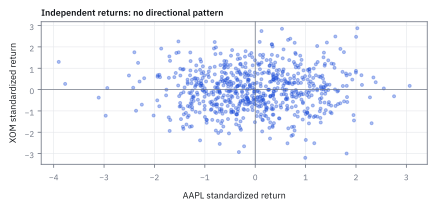
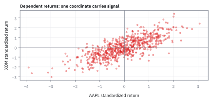
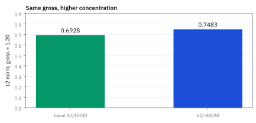

6.4 Norms
Norm คือกติกาที่ย่อ vector ทั้งชุดให้เหลือตัวเลข “ขนาด” ตัวเดียว กติกามีหลายแบบ และแต่ละแบบตอบคนละคำถาม เช่น พอร์ตถือของรวมเท่าไร หุ้นตัวไหนถือมากเกิน ปรับพอร์ตแล้วเสียค่าธรรมเนียมเท่าไร หรือพอร์ตผันผวนแค่ไหนเมื่อยอมสมมติบางอย่าง
กองทุนแห่งหนึ่งมีเงินของตัวเองก้อนหนึ่ง เงินก้อนนี้เรียกว่า NAV (net asset value คือมูลค่าสุทธิที่เป็นของเจ้าของกองทุน) กองทุนเอาเงินไปถือหุ้นสหรัฐห้าตัว ตั้งชื่อสมมติว่า A ถึง E
ถือแต่ละตัวมากแค่ไหน บอกเป็น “น้ำหนัก” คือมูลค่าที่ถือหารด้วย NAV น้ำหนักบวกคือ long แปลว่าซื้อหุ้นมาถือ และได้กำไรเมื่อราคาขึ้น น้ำหนักติดลบคือ short แปลว่ายืมหุ้นมาขายก่อน และได้กำไรเมื่อราคาลง
น้ำหนักของห้าตัว (สมมติ):
- A: $+40\%$ (long)
- B: $-25\%$ (short)
- C: $+30\%$ (long)
- D: $+15\%$ (long)
- E: $-10\%$ (short)
ในที่ประชุมความเสี่ยง ผู้จัดการถามว่า “พอร์ตนี้ใหญ่แค่ไหน” คนแรกตอบ 50% คนที่สองตอบ 120% คนที่สามตอบ 40% ผู้จัดการต้องตั้งเพดานความเสี่ยง คือขีดจำกัดที่พอร์ตห้ามเกิน จึงถามต่อว่าใครคำนวณผิด และควรใช้ตัวเลขไหนตั้งเพดาน
ลองตอบก่อนเปิดเฉลย
ไม่มีใครผิด สามคนแค่วัดคนละแบบ:
คนแรกบวกน้ำหนักตามเครื่องหมาย ได้ net 50% ตัวเลขนี้บอกว่าพอร์ตเอียงไปทางขาขึ้นแค่ไหน คนที่สองบวกขนาดทุกตัวโดยไม่สนเครื่องหมาย ได้ gross 120% ตัวเลขนี้บอกว่าถือของรวมเท่าไร คนที่สามหยิบตัวที่ใหญ่ที่สุด คือ A ที่ 40% ตัวเลขนี้บอกว่าพอร์ตฝากไว้กับหุ้นตัวเดียวมากแค่ไหน
gross ใช้คุม leverage (การถือของรวมมากกว่าเงินของตัวเอง) ตัวใหญ่สุดใช้คุมการกระจุกในหุ้นตัวเดียว ส่วน net บอกแค่ทิศ แต่ทั้งสามตัวยังไม่ใช่ความผันผวน และไม่ใช่ขาดทุนสูงสุด เพราะยังไม่มีใครใช้ข้อมูลว่าหุ้นห้าตัวขยับไปด้วยกันอย่างไร
ภาพรวมก่อนลงสูตร
ลองนึกถึงการเดินในเมืองที่ถนนเป็นตาราง เราเดินไปทางตะวันออก 3 กิโลเมตร แล้วเลี้ยวขึ้นเหนืออีก 4 กิโลเมตร ถามว่าเดินไป “ไกลแค่ไหน” ตอบได้สามแบบ:
- ระยะที่เดินตามถนนจริง: $3+4=7$ กิโลเมตร
- ระยะเส้นตรงจากจุดเริ่มถึงปลายทาง: $\sqrt{3^2+4^2}=\sqrt{25}=5$ กิโลเมตร
- ขาที่ยาวที่สุด: $\max(3,4)=4$ กิโลเมตร
ทั้งสามตัวเลขถูก แต่ตอบคนละคำถาม พอร์ตก็เป็นแบบเดียวกัน น้ำหนักของหุ้นห้าตัวคือรายการตัวเลขห้าช่อง ซึ่งเรียกว่า vector การย่อหลายช่องให้เหลือ “ขนาด” ตัวเดียวทำได้หลายวิธี แต่ละวิธีเรียกว่า norm
วิธีแรกบวกขนาดทุกช่อง เรียกว่า L1 บนโต๊ะเทรด L1 ของพอร์ตคือ gross exposure (มูลค่าที่ถือรวมทุกตัวไม่สนทิศ) และ L1 ของรายการซื้อขายคือ turnover (ยอดซื้อขายรวมตอนปรับพอร์ต) วิธีที่สองหยิบช่องที่ใหญ่ที่สุด เรียกว่า L∞ ใช้ตั้งเพดานต่อชื่อหุ้น วิธีที่สามยกกำลังสองทุกช่อง บวก แล้วถอดราก เรียกว่า L2 ซึ่งคือระยะเส้นตรงแบบในเรขาคณิต
L2 จะกลายเป็นความผันผวนของพอร์ตได้ก็ต่อเมื่อเราสมมติว่าหุ้นแต่ละคู่ขยับไปด้วยกันแค่ไหน ตัวเลขที่บอกเรื่องนี้เรียกว่า covariance หน้านี้จะบอกให้ชัดว่าต้องสมมติอะไร รูปด้านล่างคือการเดินในเมืองที่ว่า
เส้นทางของหน้านี้:
- คำนวณ L1, L2, L∞ บนพอร์ตห้าตัวในโจทย์ต้นหน้า
- ตรวจว่าตัวเลขแบบไหนนับเป็น norm ได้ และรวมทุกแบบเป็นครอบครัวเดียวชื่อ Lp
- พิสูจน์ลำดับ L∞ ≤ L2 ≤ L1 ที่ใช้จับ bug ในรายงาน
- ใช้ L1 อ่าน leverage ที่ซ่อนอยู่ในพอร์ตจาก optimizer และคิดค่าธรรมเนียมจาก turnover
- ใช้ L2 อธิบายว่าทำไมการกระจายเงินไปหลายหุ้นลดความผันผวน และลดได้ถึงแค่ไหน
- ใช้ norm วัดระยะห่าง เพื่อค้นหา “วันที่คล้ายวันนี้” ในข้อมูลย้อนหลัง
รูป — เดินตามถนน เดินเป็นเส้นตรง และขาที่ยาวที่สุด
ศัพท์ที่ใช้ในหัวข้อนี้
- NAV (net asset value)
- มูลค่าสุทธิของกองทุน คือเงินที่เป็นของเจ้าของจริง ๆ น้ำหนักทุกตัวในหน้านี้วัดเทียบกับ NAV เช่นน้ำหนัก 0.40 คือถือหุ้นมูลค่า 40% ของ NAV
- Long / short
- long คือซื้อหุ้นมาถือ ได้กำไรเมื่อราคาขึ้น ส่วน short คือยืมหุ้นมาขายก่อนแล้วซื้อคืนทีหลัง ได้กำไรเมื่อราคาลง ในหน้านี้ short เขียนเป็นน้ำหนักติดลบ
- Norm
- กติกาที่ย่อ vector ให้เหลือตัวเลขขนาดตัวเดียว เขียนว่า $\|\mathbf x\|$ กติกาจะนับเป็น norm ได้ต้องผ่านสามข้อ: ไม่ติดลบและเป็นศูนย์เฉพาะเมื่อทุกช่องเป็นศูนย์, คูณ vector ด้วยตัวเลขใดแล้วขนาดคูณตามขนาดของตัวเลขนั้น, และขนาดของผลบวกไม่เกินผลบวกของขนาด (triangle inequality)
- L1 norm
- บวกขนาดของทุกช่องโดยไม่สนเครื่องหมาย ถ้าเป็นพอร์ตคือ gross exposure ถ้าเป็นรายการซื้อขายคือ turnover ใช้คุม leverage และค่าธรรมเนียม
- L2 norm
- ยกกำลังสองทุกช่อง บวก แล้วถอดราก เขียนได้ว่า $\sqrt{\mathbf x^{\mathsf T}\mathbf x}$ คือระยะเส้นตรงแบบเรขาคณิต ใช้วัดระยะห่างระหว่างข้อมูล และใช้คำนวณความผันผวนของพอร์ตได้เมื่อหุ้นทุกตัวผันผวนเท่ากันและไม่สัมพันธ์กัน
- L∞ norm
- ขนาดของช่องที่ใหญ่ที่สุด ใช้ตั้งเพดานว่าถือหุ้นตัวใดตัวหนึ่งได้ไม่เกินเท่าไร
- Gross exposure และ net exposure
- gross คือผลบวกขนาดทุกสถานะ บอกว่าถือของรวมเท่าไร net คือผลบวกตามเครื่องหมาย (long ลบ short) บอกว่าพอร์ตเอียงไปทางขาขึ้นหรือขาลง net ไม่ใช่ norm เพราะพอร์ตที่ถือของอยู่ก็มี net เป็นศูนย์ได้
- Leverage
- การถือของรวมมากกว่าเงินของตัวเอง วัดด้วย gross หารด้วย NAV เช่น gross 120% คือถือของรวม 1.2 เท่าของ NAV
- Turnover
- ยอดซื้อขายรวมในการปรับพอร์ตหนึ่งครั้ง คือ L1 ของการเปลี่ยนน้ำหนัก ใช้ประมาณค่าธรรมเนียมซื้อขาย
- Covariance และ correlation
- ตัวเลขที่บอกว่าผลตอบแทนของหุ้นสองตัวขยับไปด้วยกันแค่ไหน correlation อยู่ระหว่าง −1 ถึง 1 โดย 1 คือขยับไปทางเดียวกันทุกครั้งในสัดส่วนเดิม และ 0 คือไม่มีความสัมพันธ์เชิงเส้นกันเลย
ขั้นที่ 1 — สามไม้บรรทัดบนพอร์ตเดียว
ขั้นแรกตั้งชื่อให้สามวิธีที่คนในที่ประชุมใช้ แล้วคำนวณให้เห็นทีละตัวว่าตัวเลขมาจากไหน เขียนน้ำหนักทั้งห้าเป็น vector เดียว:
- $\mathbf w=(0.40,\,-0.25,\,0.30,\,0.15,\,-0.10)$ เรียงจากหุ้น A ถึง E
- $w_i$ คือน้ำหนักของหุ้นตัวที่ $i$ และ $|w_i|$ คือขนาดของมันโดยไม่สนเครื่องหมาย เช่น $|-0.25|=0.25$
- $\sum_i$ แปลว่าบวกทุกตัว ตั้งแต่ $i=1$ ถึง 5
ตัวห้อยท้าย $\|\mathbf w\|$ บอกว่าใช้วิธีไหน: $\|\mathbf w\|_1$ คือ L1, $\|\mathbf w\|_2$ คือ L2 และ $\|\mathbf w\|_\infty$ คือ L∞
สามตัวแรกเป็น norm ซึ่งทิ้งเครื่องหมายก่อนรวมเหมือนกัน จึงไม่สนว่าเป็น long หรือ short สามตัวต่างกันแค่วิธีรวม L1 บวกขนาดตรง ๆ L∞ หยิบตัวใหญ่สุดตัวเดียว ส่วน L2 ยกกำลังสองก่อนบวก การยกกำลังสองทำให้ช่องใหญ่มีเสียงดังกว่าช่องเล็ก หุ้น A มีขนาด $0.40/1.20\approx33\%$ ของ L1 แต่กำลังสองของมันคือ $0.16/0.345\approx46\%$ ของผลรวมกำลังสอง
ตัวสุดท้ายคือ net ซึ่งบวกตามเครื่องหมาย ขา long รวมได้ 0.85 ขา short รวมได้ 0.35 จึงเหลือ 0.50
ถ้า NAV คือ \$100 ล้าน (สมมติ) คูณทุกน้ำหนักด้วย 100 ก็ได้มูลค่าเป็นล้านดอลลาร์ ตัวเลขขนาดทั้งหมดก็คูณ 100 ตาม (กติกาข้อสองในขั้นถัดไปบอกว่าทำไม):
ทุกตัวมีหน่วยล้านดอลลาร์ แล้ว gross \$120 ล้านบน NAV \$100 ล้าน แปลว่ากองทุนต้องกู้เงินมา \$20 ล้านหรือเปล่า ไม่ใช่ ลองไล่เงินสดในบัญชี กองทุนเริ่มด้วยเงินสด \$100 ล้าน จ่ายซื้อขา long \$85 ล้าน และได้เงินจากการขายขา short \$35 ล้าน:
NAV คือของที่ถือ ลบหุ้นที่ยืมมาและต้องคืน บวกเงินสด จึงยังเป็น \$100 ล้านเท่าเดิม ไม่มีการกู้เงินสดเลย เงินจากการ short อยู่ในบัญชี แต่โบรกเกอร์จะกันบางส่วนไว้เป็นหลักประกันว่าเราจะคืนหุ้นที่ยืมได้
รูป — น้ำหนักห้าตัว กับไม้บรรทัดสี่อัน
ขั้นที่ 2 — อะไรนับเป็น norm ได้: กติกาสามข้อ
ทำไมต้องมีกติกา เพราะฝ่ายความเสี่ยงจะเอาตัวเลขนี้ไปตั้งเพดาน ถ้าตัวเลขไม่ได้ทำตัวเหมือน “ขนาด” จริง เพดานจะรั่ว คือพอร์ตเสี่ยงขึ้นได้โดยที่ตัวเลขไม่ขยับ กติกามีสามข้อ ในสูตรด้านล่าง $\mathbf x$ กับ $\mathbf y$ คือพอร์ตสองพอร์ตใด ๆ (เขียนเป็น vector) และ $a$ คือตัวเลขใด ๆ ที่ใช้คูณทั้งพอร์ต
กติกาข้อแรกอยู่ในสองบรรทัดบน ในนั้น $\mathbf 0$ คือ vector ที่ทุกช่องเป็นศูนย์ หรือพอร์ตที่ไม่ถืออะไรเลย พอร์ตนี้มีขนาดศูนย์ ส่วนพอร์ตอื่นทุกพอร์ตที่ถือของอยู่ แม้แค่ตัวเดียว ต้องมีขนาดเป็นบวก ขนาดเป็นศูนย์จึงแปลได้ทางเดียวว่าไม่ถืออะไรเลย
ข้อสองคือการขยาย: เพิ่มทุกสถานะเป็นสองเท่า ($a=2$) ขนาดต้องเป็นสองเท่า และถ้าพลิก long เป็น short ทั้งพอร์ต ($a=-1$) ขนาดต้องเท่าเดิม เพราะ $|-1|=1$
ข้อสามชื่อ triangle inequality: ขนาดของพอร์ตรวมไม่เกินขนาดของพอร์ตย่อยบวกกัน ข้อนี้ทำให้ตั้งเพดานแยกรายโต๊ะได้ ถ้าโต๊ะหนึ่งมี gross ไม่เกิน 0.6 และอีกโต๊ะก็ไม่เกิน 0.6 (สมมติ) ทั้งบริษัทจะมี gross ไม่เกิน $0.6+0.6=1.2$ แน่นอน สำหรับ L1 ข้อนี้มาจากความจริงทีละช่อง $|x_i+y_i|\le|x_i|+|y_i|$ แล้วบวกทุกช่อง
ตัวเลขที่ตกกติกามีให้เห็นสองตัว net ตกข้อแรก เพราะพอร์ต $(0.5,\,-0.5)$ ถือของอยู่สองตัว แต่ net คือ $0.5-0.5=0$ ผลรวมกำลังสองที่ยังไม่ถอดรากตกข้อสอง เพราะพอร์ต $(0.5,\,0.5)$ ได้ $0.25+0.25=0.5$ แต่พอขยายพอร์ตสองเท่าเป็น $(1,\,1)$ ได้ $1+1=2$ ซึ่งโตขึ้น $2/0.5=4$ เท่า ไม่ใช่ 2 เท่า การถอดรากแก้ปัญหานี้ เพราะ $\sqrt4=2$ นี่คือเหตุผลที่ L2 ต้องมีราก ส่วนข้อสามจะใช้ในขั้นถัดไป เพื่อแสดงว่าทำไมสูตรบางแบบในครอบครัวเดียวกันไม่นับเป็น norm
ขั้นที่ 3 — L2 คือ dot product กับตัวเอง และทุกแบบอยู่ในครอบครัว Lp
ขั้นนี้ตอบสองคำถาม คำถามแรก: L2 มาจากไหน คำตอบคือมันคือ dot product ของ vector กับตัวเอง แล้วถอดราก dot product คือการคูณช่องต่อช่องแล้วบวก เขียนเป็นแถวคูณคอลัมน์ได้ว่า $\mathbf x^{\mathsf T}\mathbf x$ (ตัว $\mathsf T$ คือพลิกคอลัมน์ให้เป็นแถว) สูตรด้านล่างเริ่มด้วยการลองกับ vector $(1,-2)$ ให้ดู ความเชื่อมโยงนี้จะพาไปหามุมระหว่าง vector ใน inner product และ correlation
คำถามที่สอง: L1, L2, L∞ เกี่ยวกันไหม คำตอบคือเป็นสูตรเดียวกันที่เปลี่ยนแค่เลขยกกำลัง $p$ สูตรนี้เรียกว่า Lp norm: ยกขนาดทุกช่องกำลัง $p$ บวกกัน แล้วถอดรากที่ $p$ ลองกับ vector $(1,2)$ ทีละค่าของ $p$:
ยิ่ง $p$ ใหญ่ ช่องใหญ่ยิ่งกลบช่องเล็ก เพราะยกกำลังสูง ๆ ทำให้ตัวเลขที่ต่างกันนิดเดียวห่างกันมาก เช่นที่ $p=10$ ช่องเล็กได้ $1^{10}=1$ แต่ช่องใหญ่ได้ $2^{10}=1{,}024$ ผลรวมจึงแทบเป็นของช่องใหญ่ทั้งหมด
ทำไมจึงไปจบที่ค่าใหญ่สุดพอดี ให้ $M=\max_i|x_i|$ คือขนาดของช่องที่ใหญ่ที่สุด และ $n$ คือจำนวนช่อง มีอย่างน้อยหนึ่งช่องที่มีขนาด $M$ และไม่มีช่องไหนเกิน $M$ ผลรวมจึงถูกบีบไว้สองข้าง แล้วถอดรากที่ $p$ ทั้งสามฝั่ง:
จังหวะสำคัญคือ $n^{1/p}$ เมื่อ $p$ โตขึ้น ค่านี้เข้าหา 1 เช่น $2^{1/10}\approx1.07$ ขอบบนจึงไหลลงมาประกบขอบล่าง และ $\|\mathbf x\|_p$ ที่ติดอยู่ตรงกลางก็ถูกบีบเข้าหา $M$ นี่คือเหตุผลที่ norm “หยิบช่องใหญ่สุด” ได้ชื่อว่า L∞
แล้วทำไมต้องมีเงื่อนไข $p\ge1$ ลอง $p=\tfrac12$ ดู vector $(1,0)$ กับ $(0,1)$ แต่ละตัวมี “ขนาด” 1 แต่ผลบวกของมันคือ $(1,1)$ มี “ขนาด” 4:
4 มากกว่า $1+1=2$ สูตรนี้จึงตก triangle inequality และไม่นับเป็น norm ถ้าเอาไปตั้งเพดานรายโต๊ะ สองโต๊ะที่ผ่านเพดานรวมกันแล้วอาจทะลุเพดานรวมได้
รูป — ขนาดของ (1, 2) เมื่อเปลี่ยน p
รูป — พอร์ตที่มีขนาดเท่ากับหนึ่งในสองไม้บรรทัด

ขั้นที่ 4 — ขอบเขตที่ต้องจริงเสมอ ใช้จับ bug ในรายงาน
ระบบความเสี่ยงคำนวณ norm หลายแบบของพอร์ตเดียวกันทุกวัน ถ้ามีลำดับที่ต้องจริงเสมอ เราก็ใช้มันตรวจรายงานได้ทันที รูปการเดินต้นหน้าให้ $4\le5\le7$ ขั้นนี้พิสูจน์ว่าลำดับนี้จริงกับทุก vector ที่มี $n$ ช่อง และหาขอบบนว่า L1 ใหญ่กว่า L2 ได้ไม่เกินกี่เท่า
บรรทัดแรกคือสิ่งที่จะพิสูจน์ เราจะพิสูจน์ทีละช่วงจากซ้ายไปขวา ช่วงซ้ายสุด L∞ ≤ L2 ง่ายที่สุด ให้ $M$ คือขนาดของช่องใหญ่สุด แล้ว $M^2$ เป็นแค่หนึ่งพจน์ในผลรวมกำลังสอง จึงได้ $M^2\le\sum_ix_i^2$ ถอดรากแล้วได้ $M\le\|\mathbf x\|_2$
ช่วงกลาง L2 ≤ L1 มาจากการกระจายกำลังสองของผลรวม เหมือน $(a+b)^2=a^2+b^2+2ab$ ผลที่ได้คือผลรวมกำลังสอง บวกพจน์ไขว้ $|x_i||x_j|$ ซึ่งไม่มีทางติดลบ กำลังสองของ L1 จึงไม่น้อยกว่ากำลังสองของ L2 ถอดรากแล้วลำดับยังเหมือนเดิม
ช่วงขวาสุดคือขอบบน ตรงนี้ต้องใช้ลูกเล่นหนึ่งอย่าง ให้ $m=\sum_i|x_i|/n$ คือขนาดเฉลี่ยของแต่ละช่อง ผลรวมของ “ระยะห่างจากค่าเฉลี่ยยกกำลังสอง” ติดลบไม่ได้ เพราะเป็นผลรวมของกำลังสอง พอกระจายวงเล็บ พจน์กลางกับพจน์ท้ายรวมกันได้พอดี ถ้าเรียก $S=\sum_i|x_i|$ ซึ่งก็คือ L1 จะได้ $m=S/n$ และ
ดังนั้น $0\le\|\mathbf x\|_2^2-S^2/n$ หรือ $\|\mathbf x\|_1^2\le n\|\mathbf x\|_2^2$ ถอดรากได้ขอบบน $\sqrt n\,\|\mathbf x\|_2$ ขอบนี้เท่ากันพอดีเมื่อทุกช่องมีขนาดเท่ากัน เพราะตอนนั้นระยะห่างจากค่าเฉลี่ยเป็นศูนย์ทุกช่อง
บรรทัดสุดท้ายคือพอร์ตห้าตัวต้นหน้า ($n=5$) ทุกช่วงผ่าน การใช้งานจริงคือ ถ้าระบบรายงาน L2 มากกว่า L1 ของพอร์ตเดียวกัน หรือ L1 เกิน $\sqrt n$ เท่าของ L2 ให้ไปหา bug ในโค้ดหรือหน่วย อย่าเสียเวลาหาเหตุผลทางการเงิน เพราะอสมการนี้เป็นเรื่องของตัวเลขล้วน ๆ ไม่ว่าตลาดจะเป็นอย่างไรก็ต้องจริง
ขั้นที่ 5 — L1 อ่าน leverage ที่ net ซ่อนไว้: พอร์ตจาก optimizer
optimizer คือโปรแกรมที่เลือกน้ำหนักให้เราอัตโนมัติ แบบ mean-variance เลือกพอร์ตที่ผลตอบแทนคาดหวังสูงที่สุด โดยที่ความผันผวนไม่เกินระดับที่กำหนด ถ้าเราไม่ใส่ข้อจำกัดอะไรนอกจาก “น้ำหนักรวมกันเป็น 1” (คือใช้เงินลงทุนครบ NAV พอดี) optimizer มักตอบด้วยสถานะ long ก้อนใหญ่กับ short ก้อนใหญ่ที่หักล้างกัน net จึงดูปกติ แต่ L1 จะเปิดให้เห็นว่าพอร์ตใหญ่แค่ไหน
โจทย์ให้อะไรมาบ้าง: ตัวอย่างนี้มาจาก workbook ของคอร์ส
- สินทรัพย์แปดกลุ่ม เช่น พันธบัตรสหรัฐ (US Bonds) และหุ้นตลาดพัฒนาแล้วนอกสหรัฐ (Int'l Dev. Equity)
- ผลตอบแทนคาดหวังและ covariance ของทั้งแปดกลุ่ม ตามที่ workbook ให้มา ตัวเลขเหล่านี้เป็นค่าประมาณจากข้อมูลย้อนหลัง ไม่ใช่ค่าจริงที่รู้แน่
- เป้าหมาย: ผลตอบแทนคาดหวังสูงสุด โดยความผันผวนไม่เกิน 100% ต่อปี
optimizer ตอบน้ำหนัก $x_i$ ต่อ NAV ดังนี้ (1 คือ 100% ของ NAV):
| สินทรัพย์ | น้ำหนัก $x_i$ | ฝั่ง |
|---|---|---|
| US Bonds | 5.6762 | long |
| Int'l Bonds | −0.5214 | short |
| US Large Growth | 2.5467 | long |
| US Large Value | −1.7475 | short |
| US Small Growth | −1.6448 | short |
| US Small Value | 4.2951 | long |
| Int'l Dev. Equity | −8.6474 | short |
| Int'l Emerg. Equity | 1.0431 | long |
รวมขา long กับขา short แยกกันก่อน แล้วค่อยคิด net, L1 และ L∞:
คำตอบ: net คือ 100% ถ้าดูแค่ตัวนี้ พอร์ตเหมือนกองทุนธรรมดาที่ลงทุนเงินครบจำนวน แต่ L1 บอกว่า gross คือ $26.12\times100\%=2{,}612\%$ ของ NAV แยกเป็น long 1,356% กับ short 1,256% และ L∞ บอกว่าสถานะใหญ่สุดคือ short หุ้นตลาดพัฒนาแล้วนอกสหรัฐถึง 865% ของ NAV
optimizer รายงานว่าพอร์ตนี้ให้ผลตอบแทนคาดหวัง 67.4% ต่อปี (ตัวเลขจาก workbook) ทำไมสวยขนาดนั้น เพราะพอร์ตเดิมพันกับส่วนต่างเล็ก ๆ ระหว่างค่าประมาณของสินทรัพย์ที่คล้ายกัน ค่าประมาณทุกตัวคลาดเคลื่อนอยู่แล้ว พอขยายด้วย leverage ราว 26 เท่า ความคลาดเคลื่อนก็ขยาย 26 เท่าตาม ภาพนี้เหมือนการเดินตามสองทิศที่เกือบขนานกันใน linear independence ที่ต้องใช้ขาใหญ่สองขาหักล้างกันจึงไปถึงจุดหมาย
วิธีที่ใช้จริงคือใส่ L1 เป็นข้อจำกัดของ leverage เช่น $\|\mathbf x\|_1\le2$ แปลว่า gross ไม่เกิน 200% ของ NAV ผลที่ได้ดูได้จาก frontier ซึ่งคือเส้นที่รวมพอร์ตที่ดีที่สุดในแต่ละระดับความผันผวน ข้อจำกัดนี้ทำให้ frontier ที่คำนวณจากค่าประมาณ อยู่ใกล้ frontier ที่เกิดขึ้นจริงกว่าเดิมมาก ส่วนถ้าห้าม short ทั้งหมด คือให้ $x_i\ge0$ ทุกตัว และยังให้ $\sum_ix_i=1$ จะได้ $\|\mathbf x\|_1=\sum_i|x_i|=\sum_ix_i=1$ พอดี เพราะเมื่อไม่มีตัวติดลบ ขนาดกับตัวเลขก็เป็นค่าเดียวกัน gross จึงถูกล็อกไว้ที่ 100%
ตรวจเองใน 10 วินาที: ใช้ทศนิยมสองตำแหน่งก็พอ long รวม $5.68+2.55+4.30+1.04=13.57$ short รวม $0.52+1.75+1.64+8.65=12.56$ ผลต่าง $13.57-12.56=1.01$ ใกล้ net 1.00 ส่วนที่เกิน 0.01 มาจากการปัดทศนิยม
รูป — net 100% แต่ gross 2,612%
ขั้นที่ 6 — turnover คือ L1 ของรายการซื้อขาย ไม่ใช่เงินสดสุทธิ
ทุกครั้งที่ปรับพอร์ต คือเปลี่ยนน้ำหนักจากเดิมไปเป็นน้ำหนักเป้าหมาย กองทุนต้องส่งคำสั่งซื้อขาย และโบรกเกอร์คิดค่าธรรมเนียมจากขนาดของทุกคำสั่ง ไม่ว่าคำสั่งนั้นเป็นซื้อหรือขาย ดังนั้นการวัดว่าการปรับครั้งนี้ “ใหญ่แค่ไหน” ต้องบวกขนาดของทุกคำสั่ง ซึ่งก็คือ L1 ของการเปลี่ยนน้ำหนัก
โจทย์ให้อะไรมาบ้าง (ตัวเลขสมมติ): พอร์ตถือหุ้นสามตัว AAPL (Apple) JPM (ธนาคาร JPMorgan) และ XOM (บริษัทน้ำมัน ExxonMobil)
- น้ำหนักก่อนปรับ $\mathbf w_0=(0.50,\,-0.30,\,0.10)$
- น้ำหนักเป้าหมาย $\mathbf w_1=(0.60,\,-0.40,\,0.20)$
- NAV $N=\$10$ ล้าน
- ค่าธรรมเนียม 10 basis points ของยอดซื้อขาย (1 basis point คือ 0.01% จึงเป็น $10\times0.01\%=0.1\%$ หรือ $c=0.001$ ต่อดอลลาร์ที่ซื้อขาย)
หาการเปลี่ยนน้ำหนัก $\Delta\mathbf w=\mathbf w_1-\mathbf w_0$ ก่อน ทีละหุ้น ($\Delta w_A$ คือ AAPL, $\Delta w_J$ คือ JPM, $\Delta w_X$ คือ XOM) แล้วเทียบผลรวมตามเครื่องหมายกับ L1:
คำตอบ: แต่ละช่องเปลี่ยน 0.10 ของ NAV คือ $0.10\times\$10$ ล้าน $=\$1$ ล้าน ต้องซื้อ AAPL \$1 ล้าน short JPM เพิ่ม \$1 ล้าน และซื้อ XOM \$1 ล้าน ยอดซื้อขายรวมจึงเป็น \$3 ล้าน หรือ turnover 30% ของ NAV ค่าธรรมเนียมจึงเป็น \$3,000
แล้วผลรวมตามเครื่องหมาย 0.10 คืออะไร มันคือเงินสดที่ออกจากบัญชีสุทธิ กองทุนจ่ายซื้อ AAPL กับ XOM รวม \$2 ล้าน แต่ได้เงินจากการ short JPM เข้ามา \$1 ล้าน เงินสดจึงออกสุทธิ $2-1=\$1$ ล้าน ถ้าคิดค่าธรรมเนียมจากตัวเลขนี้จะได้ $0.001\times1{,}000{,}000=\$1{,}000$ ซึ่งต่ำไปสามเท่า เพราะโบรกเกอร์คิดเงินทั้งสามคำสั่ง ไม่ได้คิดจากเงินสดสุทธิ
ลองขยายเป็นทั้งปี ถ้าพอร์ตใหญ่ \$100 ล้าน และปรับแบบเดียวกันทุกเดือน (สมมติ NAV และ turnover คงที่ทั้งปี):
ค่าธรรมเนียมกิน \$360,000 ต่อปี หรือ 0.36% ของ NAV ทุกปี
ข้อควรระวังเรื่องนิยาม: บางรายงานนิยาม turnover เป็นครึ่งหนึ่งของ L1 คือนับแค่ฝั่งซื้อหรือฝั่งขาย จึงรายงาน $0.30/2=15\%$ ต้องเทียบนิยามก่อนเทียบตัวเลข และถ้าค่าธรรมเนียมต่อดอลลาร์ของแต่ละหุ้นไม่เท่ากัน ให้ $c_i$ คือค่าธรรมเนียมของหุ้นตัวที่ $i$ แล้วใช้ $N\sum_ic_i|\Delta w_i|$ ซึ่งยังเป็น L1 แค่ถ่วงแต่ละช่องด้วย $c_i$
รูป — สามคำสั่ง รวมขนาด 3 ล้าน

ขั้นที่ 7 — L2 กลายเป็นความผันผวนเมื่อไร: ทำไมกระจายลงทุนจึงช่วย
คำถามที่ผู้จัดการอยากรู้จริง ๆ คือ “พอร์ตนี้แกว่งแค่ไหน” ซึ่งก็คือความผันผวนของพอร์ต ขั้นนี้ดูว่าเมื่อไร L2 ตอบคำถามนี้ได้ สัญลักษณ์ที่ใช้:
- $R_i$ คือผลตอบแทนในหนึ่งปีของหุ้นตัวที่ $i$ ซึ่งยังไม่รู้ค่าล่วงหน้า
- ผลตอบแทนของพอร์ตคือ $\sum_iw_iR_i$ คือผลตอบแทนแต่ละตัวคูณน้ำหนักแล้วบวกกัน
- $\sigma_p$ คือความผันผวนของพอร์ต วัดเป็น SD (standard deviation) ของผลตอบแทนพอร์ต และ $\sigma_p^2$ คือ variance
- $\operatorname{Var}(R_i)$ คือ variance ของหุ้นตัวเดียว และ $\operatorname{Cov}(R_i,R_j)$ คือ covariance ที่บอกว่าหุ้นสองตัวขยับไปด้วยกันแค่ไหน
เริ่มจากกฎ variance ของผลบวกใน variance และ standard deviation ซึ่งจริงเสมอ แล้วดูว่าต้องสมมติอะไรบ้างจึงจะเหลือแค่ L2
สูตรแรกมีสองส่วน ส่วนแรกคือการแกว่งของหุ้นแต่ละตัว ส่วนที่สองคือพจน์ไขว้ ที่นับว่าหุ้นแต่ละคู่แกว่งไปด้วยกันแค่ไหน จะเหลือแค่ L2 ได้ต้องสมมติสองข้อ ข้อแรก ทุกหุ้นมีความผันผวนเท่ากัน คือ $\sigma$ ข้อสอง covariance ของทุกคู่เป็นศูนย์ คือไม่สัมพันธ์กัน (ไม่จำเป็นต้องถึงขั้นเป็นอิสระต่อกัน) พจน์ไขว้จึงหายหมด เหลือ $\sigma^2$ คูณผลรวมกำลังสองของน้ำหนัก ถอดรากแล้วความผันผวนเท่ากับ $\sigma$ คูณ L2 พอดี
ตอนนี้ลองเทียบสองพอร์ต พอร์ตแรกทุ่มเงินทั้งหมดในหุ้นตัวเดียว $(1,0,\ldots,0)$ ซึ่งมี L2 เท่ากับ 1 พอร์ตที่สองแบ่งเงินเท่ากันใน $d$ ตัว แต่ละตัวได้น้ำหนัก $1/d$ L2 ของมันคือ
ถ้าทุกหุ้นมีผลตอบแทนคาดหวังเท่ากันด้วย สองพอร์ตนี้ก็ให้ผลตอบแทนคาดหวังเท่ากัน แต่ความผันผวนของพอร์ตที่สองต่ำกว่า $\sqrt d$ เท่า ถ้าหุ้นแต่ละตัวผันผวน $\sigma=20\%$ ต่อปี (สมมติ) และแบ่งเงินใน $d=100$ ตัว ความผันผวนเหลือ $20\%/\sqrt{100}=20\%/10=2\%$
แต่ในตลาดจริง หุ้นมักขยับไปด้วยกันบ้าง สมมติให้ทุกคู่มี correlation $\rho$ เท่ากัน correlation คือ covariance หารด้วยผลคูณของความผันผวนของสองหุ้น คือ $\rho=\operatorname{Cov}(R_i,R_j)/(\sigma\times\sigma)$ covariance ของแต่ละคู่จึงเป็น $\rho\sigma^2$ แล้วพจน์ไขว้ก็กลับมา คู่ $i\lt j$ มี $d(d-1)/2$ คู่ คูณ 2 ในสูตรแล้วเหลือ $d(d-1)$ พจน์ แต่ละพจน์มีค่า $\frac1d\cdot\frac1d\cdot\rho\sigma^2$ รวมกับพจน์ของหุ้นแต่ละตัวได้
ที่ $\rho=0.3$ และ $d=100$ ความผันผวนเหลือ 11.08% ไม่ใช่ 2% และต่อให้เพิ่มหุ้นไปเท่าไร สิ่งที่ลดลงได้มีแค่พจน์ $(1-\rho)/d$ ซึ่งเข้าใกล้ศูนย์ ส่วน $\rho$ ในวงเล็บยังอยู่ ความผันผวนจึงไม่มีทางต่ำกว่า $\sigma\sqrt\rho\approx10.95\%$ สิ่งที่การกระจายลบออกได้คือการแกว่งเฉพาะตัวของแต่ละหุ้น ส่วนที่หุ้นทุกตัวขยับไปด้วยกันยังอยู่ครบ
รูป — ความผันผวนของพอร์ตแบ่งเท่ากันเมื่อเพิ่มจำนวนหุ้น
ขั้นที่ 8 — L2 เรียงความเสี่ยงได้เฉพาะภายใต้สมมติฐานของมัน
ขั้นที่แล้วได้ $\sigma_p=\sigma\|\mathbf w\|_2$ แต่สูตรนี้อาศัยสมมติฐานว่าหุ้นไม่สัมพันธ์กัน ขั้นนี้ลองดูว่าถ้าสมมติฐานผิด จะเกิดอะไรขึ้นกับการจัดอันดับความเสี่ยง
ของที่รู้ (สมมติ):
- พอร์ต P $=(0.60,\,-0.40,\,0.20)$ มี gross $0.60+0.40+0.20=1.20$
- พอร์ต Q $=(0.40,\,0.40,\,0.40)$ มี gross $0.40+0.40+0.40=1.20$ เท่ากัน
- หุ้นทั้งสามตัวผันผวน $\sigma=20\%$ ต่อปีเท่ากัน
คำนวณ L2 ของสองพอร์ตก่อน แล้วคำนวณความผันผวนในสองโลกที่ต่างกันสุดขั้ว โลกแรกหุ้นไม่สัมพันธ์กันเลย ($\rho=0$) โลกที่สองหุ้นขยับเหมือนกันทุกครั้ง ($\rho=1$):
ในโลกที่ไม่สัมพันธ์กัน ใช้สูตร $\sigma\|\mathbf w\|_2$ ได้ P เสี่ยงกว่า Q เพราะ P กระจุกกว่า (L2 ใหญ่กว่า)
ในโลกที่ $\rho=1$ หุ้นสามตัวขยับเหมือนกันทุกครั้ง เหมือนเป็นหุ้นตัวเดียวกัน ให้ $R$ คือผลตอบแทนร่วมนั้น ผลตอบแทนพอร์ตจึงเป็น $\sum_iw_iR=\big(\sum_iw_i\big)R$ ความผันผวนคือ $\sigma$ คูณขนาดของ net ไม่ใช่ $\sigma$ คูณ L2 ใน P ขา short ของหุ้นตัวที่สองหักล้างขา long จึงเหลือแค่ 8% ส่วน Q ไม่มีอะไรหักล้างเลยจึงเป็น 24% อันดับกลับข้างทั้งที่ L2 ของน้ำหนักไม่เปลี่ยนเลย
สรุปคือ L2 ของน้ำหนักอย่างเดียวบอกความเสี่ยงไม่ได้ ต้องรู้ว่าหุ้นขยับไปด้วยกันอย่างไร กรณีทั่วไปใช้ $\sigma_p=\sqrt{\mathbf w^{\mathsf T}\Sigma\mathbf w}$ โดย $\Sigma$ คือ covariance matrix คือตารางที่เก็บ covariance ของทุกคู่ เรื่องนี้อยู่ใน linear transformations และ portfolio risk
รูป — gross เท่ากัน L2 ไม่เท่ากัน

ขั้นที่ 9 — ระยะห่างระหว่างวัน: หาวันในอดีตที่คล้ายวันนี้
นักวิเคราะห์อยากรู้ว่าพรุ่งนี้อาจเกิดอะไรขึ้น วิธีหนึ่งคือค้นข้อมูลย้อนหลังหาวันที่ตลาดหน้าตาคล้ายวันนี้ แล้วดูว่าวันถัดจากวันเหล่านั้นเกิดอะไร ผลของวันถัดไปเหล่านั้นใช้เป็นฉากทัศน์ (scenario คือเหตุการณ์ที่อาจเกิดขึ้น) ของพรุ่งนี้ วิธีนี้เรียกว่า nearest neighbour
“คล้าย” ต้องวัดเป็นตัวเลข ถ้าเขียนผลตอบแทนของวันหนึ่งเป็น vector ความคล้ายของสองวันก็คือระยะห่างระหว่างสอง vector ซึ่งคือ norm ของผลต่าง ยิ่งระยะสั้น ยิ่งคล้าย คำถามคือควรวัดระยะด้วย norm ไหน
โจทย์ให้อะไรมาบ้าง (ตัวเลขสมมติ):
- วันนี้หุ้นสองตัวให้ผลตอบแทน $\mathbf r=(-1.0,\,-2.0)$ หน่วยเป็น % คือหุ้นตัวแรกลง 1% และหุ้นตัวที่สองลง 2%
- มีวันในข้อมูลย้อนหลังห้าวัน ชื่อ A ถึง E ผลตอบแทนอยู่ในตารางด้านล่าง
- เกณฑ์ “คล้าย” คือระยะห่างจากวันนี้ไม่เกิน 1
ขั้นแรกหาผลต่างของแต่ละวันกับวันนี้ ทีละช่อง เช่นวัน A:
ทำแบบเดียวกันกับทุกวัน:
| วัน | ผลตอบแทน (%) | ผลต่างจากวันนี้ |
|---|---|---|
| A | $(-1.2,\,-1.5)$ | $(-0.2,\,0.5)$ |
| B | $(0.5,\,-2.2)$ | $(1.5,\,-0.2)$ |
| C | $(-2.5,\,-0.5)$ | $(-1.5,\,1.5)$ |
| D | $(-0.4,\,-2.6)$ | $(0.6,\,-0.6)$ |
| E | $(-0.2,\,-1.2)$ | $(0.8,\,0.8)$ |
แล้ววัดขนาดของผลต่างด้วยสอง norm คือ L2 (ระยะเส้นตรง) และ L∞ (ห่างมากสุดในหุ้นตัวใดตัวหนึ่ง):
คำตอบ: ถ้าวัดด้วย L2 วันที่ห่างไม่เกิน 1 มีแค่ A (0.539) กับ D (0.849) ถ้าวัดด้วย L∞ ได้ A, D และ E คือมี E เพิ่มมาอีกวัน วัน E น่าสนใจ ทั้งสองหุ้นห่างจากวันนี้แค่ 0.8 ซึ่งไม่เกิน 1 L∞ จึงนับว่าคล้าย แต่ E ห่างในทั้งสองหุ้นพร้อมกัน พอรวมเป็นระยะเส้นตรงจึงได้ 1.131 ซึ่งเกิน 1
ภาพที่ควรจำคือ จุดที่ “ห่างไม่เกิน 1” ตาม L2 เรียงเป็นวงกลม ส่วนตาม L∞ เรียงเป็นสี่เหลี่ยมที่ใหญ่กว่าและครอบวงกลมไว้ เลือก norm ต่างกัน ก็ได้ชุดวันที่คล้าย และได้ฉากทัศน์ของพรุ่งนี้ต่างกัน
รูป — วงกลม L2 กับสี่เหลี่ยม L∞ รอบวันนี้
ขั้นที่ 10 — norm เป็น penalty: L1 ทำให้เป็นศูนย์ได้ L2 แค่หด
optimizer ทำงานโดยหาน้ำหนักที่ทำให้ฟังก์ชันเป้าหมาย (objective) ต่ำที่สุด ถ้าอยากให้ optimizer ระวังไม่ถือสถานะใหญ่เกิน หรือไม่ซื้อขายบ่อยเกิน วิธีที่ใช้กันคือบวก norm ของน้ำหนักเข้าไปใน objective เป็น “ค่าปรับ” (penalty) ยิ่งถือมาก ยิ่งโดนปรับมาก
คำถามคือ ปรับด้วย L1 กับปรับด้วย L2 ยกกำลังสอง (squared L2) ได้ผลต่างกันอย่างไร ดูจากปัญหาที่มีหุ้นตัวเดียวก็พอ สัญลักษณ์ที่ใช้:
- $w$ คือน้ำหนักที่เราเลือก
- $a$ คือน้ำหนักที่อยากได้ถ้าไม่มีค่าปรับ ยิ่ง $w$ ห่างจาก $a$ ยิ่งเสีย โดยวัดความเสียด้วย $\tfrac12(w-a)^2$
- $\lambda\ge0$ คือความแรงของค่าปรับ
- $f$ คือ objective ที่ปรับด้วย L1 และ $h$ คือ objective ที่ปรับด้วย squared L2 ส่วน $w^*$ คือน้ำหนักที่ทำให้ objective ต่ำที่สุด
เริ่มที่ squared L2 เพราะง่ายกว่า $h$ เป็นฟังก์ชันเรียบ หาอนุพันธ์แล้วตั้งเป็นศูนย์ได้ตรง ๆ คำตอบคือ $a$ หารด้วย $1+2\lambda$ คือหดเข้าหาศูนย์เป็นสัดส่วน แต่ไม่มีวันเป็นศูนย์พอดี ยกเว้นเมื่อ $a=0$ อยู่แล้ว
L1 ยากกว่า เพราะ $|w|$ มีมุมหักที่ $w=0$ อนุพันธ์ที่ศูนย์จึงไม่มี ต้องแยกคิดสองฝั่ง ฝั่ง $w\gt0$ มี $|w|=w$ อนุพันธ์คือ $w-a+\lambda$ เป็นศูนย์ที่ $w=a-\lambda$ ซึ่งอยู่ฝั่งบวกจริงก็ต่อเมื่อ $a\gt\lambda$ ฝั่ง $w\lt0$ ทำแบบเดียวกันได้ $w=a+\lambda$ เมื่อ $a\lt-\lambda$
จังหวะสำคัญคือกรณีที่เหลือ $|a|\le\lambda$ ที่ $w=0$ ความชันจากทางขวาคือ $-a+\lambda$ ซึ่งไม่ติดลบ และความชันจากทางซ้ายคือ $-a-\lambda$ ซึ่งไม่เป็นบวก แปลว่าขยับออกจากศูนย์ไปทางไหน objective ก็ไม่ลดลง จุดต่ำสุดจึงอยู่ที่ศูนย์พอดี มุมหักของ $|w|$ นี้คือมุมแหลมของรูปเพชรด้านบน และเป็นเหตุผลที่ L1 ทำให้น้ำหนักเป็นศูนย์ได้จริง
ลองใส่ตัวเลข (สมมติ) $a=0.01$ และ $\lambda=0.02$:
L1 บอกว่าไม่ต้องซื้อเลย ส่วน squared L2 บอกว่าซื้อน้อยลงนิดหน่อย
ข้อควรระวังหนึ่งข้อ ถ้าพอร์ตถูกบังคับให้ไม่มี short และลงทุนครบ NAV อยู่แล้ว ทุกพอร์ตที่ทำได้จะมี $\|\mathbf w\|_1=\sum_iw_i=1$ เท่ากันหมด การบวก $\lambda\|\mathbf w\|_1$ จึงเป็นแค่การบวกค่าคงที่ ไม่เปลี่ยนคำตอบเลย สิ่งที่ควรปรับแทนคือ $\|\Delta\mathbf w\|_1$ ซึ่งคือ turnover เรื่องนี้อยู่ใน mean-variance with transaction costs
ความผิดที่ทำให้เพดานความเสี่ยงรั่ว
คิดว่าเพดาน L∞ จำกัดการขาดทุน: เพดาน 40% ต่อชื่อจำกัดแค่ขนาดสถานะวันนี้ ไม่ได้จำกัดว่าจะเสียได้เท่าไร ลองดูหุ้นที่ short ไว้ 25% ของ NAV ซึ่งผ่านเพดาน ถ้าราคาหุ้นขึ้น 200% กองทุนต้องซื้อคืนแพงขึ้น และเสีย $0.25\times200\%=0.25\times2=0.50$ คือ 50% ของ NAV จากหุ้นตัวเดียว ขาดทุนจาก short ไม่มีเพดาน เพราะราคาขึ้นได้ไม่จำกัด
คิดว่า net เป็นศูนย์แปลว่าไม่มีความเสี่ยง: พอร์ต $(0.5,\,-0.5)$ มี net $0.5-0.5=0$ แต่ถ้าวันหนึ่งหุ้นตัวแรกลง 3% และหุ้นตัวที่สองขึ้น 2% กำไรขาดทุนของพอร์ตคือ $0.5\times(-3\%)+(-0.5)\times2\%=-1.5\%-1\%=-2.5\%$ ของ NAV ทั้งสองขาเสียพร้อมกัน
ใช้ $\sigma\|\mathbf w\|_2$ เป็นความผันผวนโดยไม่ดู correlation: พอร์ต Q $=(0.4,\,0.4,\,0.4)$ ที่หุ้นผันผวน 20% ถ้าใช้ L2 จะได้ $0.20\times0.693=13.86\%$ แต่ถ้าหุ้นสามตัวขยับไปด้วยกันทั้งหมดจริง ความผันผวนคือ $0.20\times1.20=24\%$ ตัวเลขจาก L2 จึงต่ำไป $1-13.86/24\approx42\%$
คิดค่าธรรมเนียมจากเงินสดสุทธิ: ในตัวอย่างการปรับพอร์ต ค่าธรรมเนียมที่ถูกคือ $0.001\times\$3{,}000{,}000=\$3{,}000$ แต่ถ้าคิดจากเงินสดสุทธิจะได้ $0.001\times\$1{,}000{,}000=\$1{,}000$ หายไปสองในสาม
เปลี่ยนแกนแล้ววัดด้วยสูตรเดิม: ในหน้า basis พอร์ตถือ AAPL \$6 ล้าน JPM \$5 ล้าน XOM \$4 ล้าน ถ้าเขียนด้วยแกนตะกร้าสามแกน คือตะกร้าที่ถือ AAPL กับ JPM เท่ากัน ตะกร้าที่ long AAPL คู่กับ short JPM และแกน XOM เดิม จะได้พิกัด $(5.5,\,0.5,\,4)$ L2 ของสองชุดตัวเลขไม่เท่ากัน:
พอร์ตเดียวกันแต่ได้ “ขนาด” ต่างกัน เพราะ norm ขึ้นกับแกนที่ใช้เขียนตัวเลข ถ้าอยากวัดเป็นดอลลาร์รายหุ้น ต้องแปลงพิกัด $\mathbf c$ กลับเป็นมูลค่ารายหุ้น $B\mathbf c$ ก่อน ($B$ คือ matrix ที่แต่ละคอลัมน์คือตะกร้าหนึ่งใบ)
ใช้ทำอะไรบนโต๊ะจริง
ฝ่ายความเสี่ยงไม่ได้ตั้งเพดานตัวเดียว แต่ตั้งเป็นชุด เพราะแต่ละตัวเลขเฝ้าความเสี่ยงคนละแบบ:
- gross (L1) คุม leverage คือถือของรวมได้ไม่เกินกี่เท่าของ NAV
- net คุมว่าพอร์ตเอียงไปทางตลาดขาขึ้นหรือขาลงมากแค่ไหน
- สถานะใหญ่สุดต่อชื่อ (L∞) คุมการฝากพอร์ตไว้กับหุ้นตัวเดียว
- turnover (L1 ของการเปลี่ยนน้ำหนัก) คุมค่าธรรมเนียม
ยังมีตัวชี้วัดการกระจุกอีกตัวที่ใช้บ่อย คือ $\|\mathbf w\|_1^2/\|\mathbf w\|_2^2$ ซึ่งอ่านว่า “พอร์ตนี้เทียบเท่าพอร์ตที่แบ่งเงินเท่ากันกี่ชื่อ” ทำไมอ่านแบบนั้นได้ ลองใส่พอร์ตที่แบ่งเท่ากัน $k$ ชื่อ ชื่อละขนาด $c$ ก่อน พอร์ตนี้มี L1 เท่ากับ $kc$ และ L2 ยกกำลังสองเท่ากับ $kc^2$ แล้วจึงใส่พอร์ตห้าตัวต้นหน้า:
พอร์ตที่แบ่งเท่ากัน $k$ ชื่อได้ค่า $k$ พอดี พอร์ตต้นหน้ามีห้าชื่อ แต่กระจุกจนเทียบเท่าแค่ราว 4.17 ชื่อ ค่านี้ไม่เปลี่ยนเมื่อขยายทุกสถานะพร้อมกัน เพราะตัวเศษและตัวส่วนขยายเท่ากัน จึงวัดการกระจุกได้โดยไม่ปนกับขนาดพอร์ต แต่มันยังไม่รู้เรื่อง correlation ส่วนความผันผวนจริงต้องใช้ covariance matrix ในบทของ covariance matrix และ MVN
โจทย์ตรวจความเข้าใจ
1. ผู้จัดการพอร์ตมีสองแผนให้เลือกสำหรับการปรับพอร์ตสัปดาห์นี้ แผน A เปลี่ยนน้ำหนักหุ้นห้าตัว ตัวละ 2% ของ NAV แผน B เปลี่ยนหุ้นตัวเดียว 10% ของ NAV ค่าธรรมเนียมต่อดอลลาร์ที่ซื้อขายเท่ากันทุกตัว ถามว่าแผนไหนเสียค่าธรรมเนียมมากกว่า และแผนไหนมี L2 ใหญ่กว่า
เฉลย
ค่าธรรมเนียมขึ้นกับ L1 ของการเปลี่ยนน้ำหนัก ส่วนการกระจุกดูจาก L2:
L1 เท่ากัน ค่าธรรมเนียมจึงเท่ากัน แต่ L2 ของแผน B ใหญ่กว่า $0.10/0.0447\approx2.24$ เท่า เพราะการเปลี่ยนทั้งหมดกระจุกอยู่ในหุ้นตัวเดียว ถ้าหุ้นผันผวนเท่ากันและไม่สัมพันธ์กัน แผน B จะเปลี่ยนความเสี่ยงของพอร์ตมากกว่า
2. พอร์ตหนึ่งถือหุ้นสี่ตัว ตัวละ 30% ของ NAV คือ $\mathbf w=(0.3,\,0.3,\,0.3,\,0.3)$ gross เท่าไร และ gross ชนขอบบน $\sqrt n\,\|\mathbf w\|_2$ พอดีหรือไม่ เพราะอะไร
เฉลย
gross 1.2 ชนขอบบนพอดี เพราะขอบบนมาจาก $\sum_i(|x_i|-m)^2\ge0$ และผลรวมนี้เป็นศูนย์เมื่อทุกช่องมีขนาดเท่ากับค่าเฉลี่ย ซึ่งพอร์ตนี้เป็นแบบนั้นพอดี
3. กองทุนตัดสินใจขยายพอร์ตห้าตัวต้นหน้า โดยคูณทุกสถานะด้วย 3 ถามว่า gross, L2 และตัวชี้วัด “เทียบเท่ากี่ชื่อ” เปลี่ยนไปอย่างไร
เฉลย
ใช้กติกาข้อสองของ norm คือ $\|3\mathbf w\|=3\|\mathbf w\|$ และเมื่อยกกำลังสอง ตัวคูณ 3 จะกลายเป็น $3^2=9$:
gross กับ L2 โตสามเท่า ส่วนตัวชี้วัดการกระจุกเท่าเดิม เพราะตัวเศษและตัวส่วนโต 9 เท่าพร้อมกัน แล้วตัดกันหมด
คำนวณซ้ำด้วย JavaScript
โค้ดนี้คำนวณตัวเลขทุกตัวในหน้านี้ซ้ำ รวมถึงพอร์ตจาก workbook ของคอร์ส ฟังก์ชัน norm หารทุกช่องด้วยขนาดของช่องที่ใหญ่สุดก่อนยกกำลัง แล้วค่อยคูณกลับตอนท้าย เพราะถ้า $p$ ใหญ่ การยกกำลังตัวเลขใหญ่ตรง ๆ อาจล้นเกินที่คอมพิวเตอร์เก็บได้
เปิดดูโค้ด
function norm(v, p = 2) {
const m = Math.max(...v.map(Math.abs));
if (p === Infinity || m === 0) return m;
if (p < 1) throw new RangeError('p below 1 is not a norm');
return m * v.reduce((s, x) => s + Math.abs(x / m) ** p, 0) ** (1 / p);
}
const sum = v => v.reduce((s, x) => s + x, 0);
const w = [0.40, -0.25, 0.30, 0.15, -0.10];
const mvo = [5.6762, -0.5214, 2.5467, -1.7475, -1.6448, 4.2951, -8.6474, 1.0431];
const dw = [0.10, -0.10, 0.10];
const today = [-1, -2];
const days = {A: [-1.2, -1.5], B: [0.5, -2.2], C: [-2.5, -0.5], D: [-0.4, -2.6], E: [-0.2, -1.2]};
const dist = p => Object.fromEntries(Object.entries(days)
.map(([k, r]) => [k, norm(r.map((x, i) => x - today[i]), p)]));
console.log({
net: sum(w), l1: norm(w, 1), l2: norm(w), linf: norm(w, Infinity),
upper: Math.sqrt(w.length) * norm(w), effective: norm(w, 1) ** 2 / norm(w) ** 2,
lp12: [1, 2, 3, 10, Infinity].map(p => norm([1, 2], p)),
mvoNet: sum(mvo), mvoGross: norm(mvo, 1), mvoMax: norm(mvo, Infinity),
turnover: norm(dw, 1), cost10M: 1e7 * norm(dw, 1) * 0.001, yearly100M: 12 * 1e8 * norm(dw, 1) * 0.001,
vol100: [0.2 / 10, 0.2 * Math.sqrt(0.3 + 0.7 / 100)],
volPairs: [0.2 * norm([0.6, -0.4, 0.2]), 0.2 * norm([0.4, 0.4, 0.4])],
nearestL2: dist(2), nearestLinf: dist(Infinity),
l1Penalty: Math.sign(0.01) * Math.max(Math.abs(0.01) - 0.02, 0), l2Penalty: 0.01 / 1.04
});สิ่งที่ควรตอบได้หลังอ่าน
- พอร์ตเดียวมีได้หลายขนาด พอร์ตห้าตัวต้นหน้ามี gross 1.20 (L1), L2 0.587 และสถานะใหญ่สุด 0.40 (L∞) ส่วน net 0.50 ไม่ใช่ norm เพราะพอร์ตที่ถือของอยู่ก็มี net เป็นศูนย์ได้
- ตัวเลขจะนับเป็น norm ได้ต้องผ่านสามกติกา L1, L2, L∞ เป็นสมาชิกครอบครัว Lp ที่ $p\ge1$ และ L2 คือ $\sqrt{\mathbf x^{\mathsf T}\mathbf x}$
- ลำดับ $\|\mathbf x\|_\infty\le\|\mathbf x\|_2\le\|\mathbf x\|_1\le\sqrt n\|\mathbf x\|_2$ จริงกับทุก vector ถ้ารายงานไหนผิดลำดับนี้ แปลว่ามี bug
- L1 เปิดให้เห็น leverage ที่ net ซ่อนไว้ พอร์ตจาก optimizer มี net 100% แต่ gross 2,612% และ L1 ของการเปลี่ยนน้ำหนักคือ turnover ที่ใช้คิดค่าธรรมเนียม
- ความผันผวนของพอร์ตเท่ากับ $\sigma\|\mathbf w\|_2$ เฉพาะเมื่อหุ้นผันผวนเท่ากันและไม่สัมพันธ์กัน ถ้าทุกคู่มี correlation 0.3 การกระจายเงินไปกี่ตัวก็ลดความผันผวนได้ไม่ต่ำกว่า $\sigma\sqrt{0.3}$
norm บอกว่า vector ยาวแค่ไหน แต่ยังไม่บอกว่าสอง vector ชี้ไปทางเดียวกันแค่ไหน หน้าถัดไป inner product, angle และ correlation ใช้ dot product วัดมุมระหว่าง vector แล้วพบว่า correlation ก็คือ cosine ของมุมนั้น